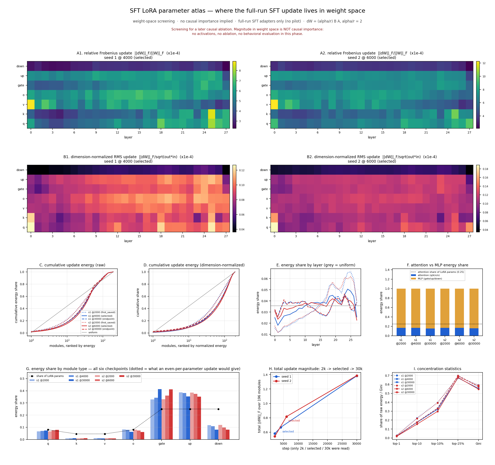
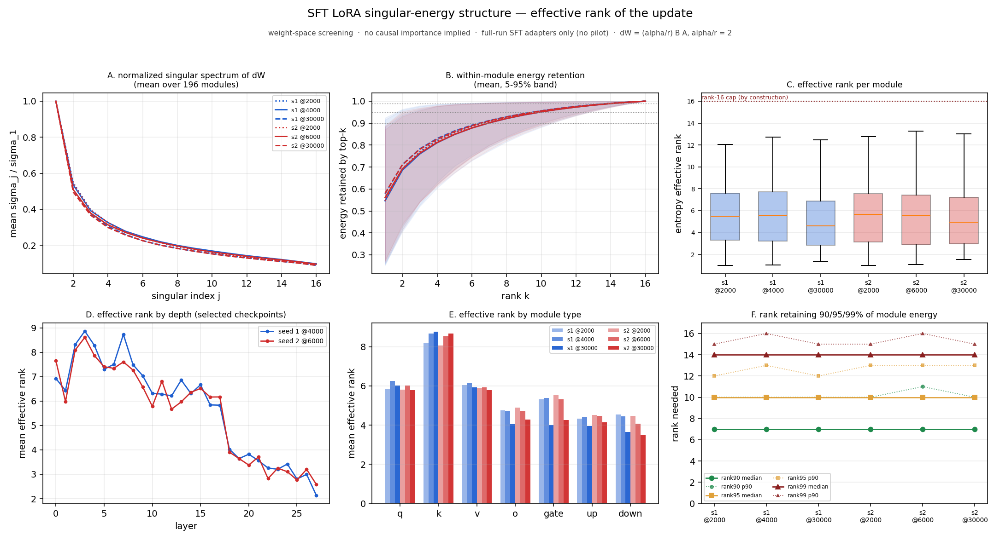
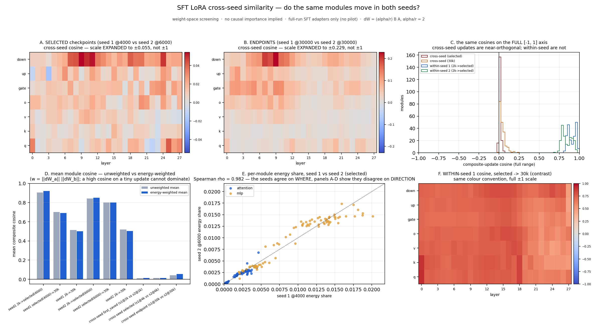

Lambda Zero · SFT mechanism screening
Where does the SFT update live?
A CPU-only map of six LoRA adapters: update magnitude, effective rank, training-time movement, and cross-seed agreement.
Question
Fast behavior change → sparse mechanism?
Two independent full runs
| Seed | First saved | Selected | Endpoint |
|---|---|---|---|
| Seed 1 | 2k | 4k | 30k |
| Seed 2 | 2k | 6k | 30k |
Adapter layout
Attention: q, k, v, o · MLP: gate, up, down
Method
From saved adapters to three figures
Magnitude
‖ΔW‖FTotal size of one module’s update.
Energy
‖ΔW‖F2Share of total adapter movement.
Effective rank
exp(−Σ pj log pj)How many singular directions matter.
Direction
cos(ΔWa, ΔWb)1=same, 0=orthogonal, −1=opposite.
The base weights are read only to normalize update size. No model generation, behavioral evaluation, activation collection, or GPU job occurs here.
Result 1 · location and magnitude
The update is broad—not stored in a few modules

Raw relative size vs dimension-normalized size.
Concentration by module, layer, and family.
Total movement grows; concentration stays modest.
Training-time shift: at 2k, late layers 19–27 contain about 49% of update energy. By selection and 30k, energy spreads toward a flatter depth profile.
Result 2 · internal dimensionality
The update uses several directions—but becomes simpler with depth

Directions needed
| Retained update energy | Median rank needed |
|---|---|
| ≈50–55% | 1 |
| ≈81–84% | 4 |
| 90% | 7 |
| 95% | 10 |
| 99% | 14 |
Mean effective rank at selected checkpoints
| Depth | Seed 1 | Seed 2 |
|---|---|---|
| Layers 0–9 | 7.69 | 7.44 |
| Layers 10–17 | 6.29 | 6.18 |
| Layers 18–23 | 3.59 | 3.45 |
| Layers 24–27 | 2.84 | 2.92 |
Testable prediction: rank-2 truncation should preserve more of the late-layer update than the early-layer update. Phase 2 must test whether that preservation also retains behavior.
Result 3 · reproducibility across seeds
Same locations, different directions
Where did movement occur?
ρ = 0.982Per-module energy ranking at the selected checkpoints.
Was it the same movement?
cos = 0.014Energy-weighted cross-seed update direction at selection.

Expanded color scales reveal tiny cross-seed cosines; color strength is not proximity to 1.
Cross-seed ≈0; within-seed checkpoint comparisons ≈0.7–0.9.
48 of the top 49 energy locations overlap across seeds.
Interpretation: the task and architecture guide both seeds toward the same parts of the network, but each seed constructs its own detailed solution inside those parts.
Conclusion
The simple sparse-weight hypothesis is not supported
Supported
Broad update energy; moderate rank; reproducible decline in rank with depth; stable magnitude locations across seeds.
Not supported
A tiny set of modules or rank-1 directions containing most of the SFT update.
Not yet known
Which updates cause the change in λ, η, consistency, or direct choices.
Next experiment
Phase 2: necessity and sufficiency
Module families
Attention-only, MLP-only, qkv-only, o-only.
Depth blocks
Keep-only and remove-only: early, middle, late.
Rank truncation
Rank 1, 2, 4, 8; split early versus late.
Controls
Base, full adapter, and parameter-matched random groups.
Run every arm separately for both seeds. Freeze the groups before viewing behavioral outcomes. Do not use the untouched method-comparison suite for development.
Evidence boundary
What was read
Six full-run LoRA adapters and base tensors for relative norms.
What was not run
No inference, generation, GPU, behavioral suite, activation capture, or ablation.
Verification
All six adapter hashes matched; 172 synthetic assertions passed; snapshot-only rendering passed from a clean archive.
No sub-2k claim: the full SFT runs saved no adapter before step 2,000. This analysis cannot localize the earliest behavioral transition.